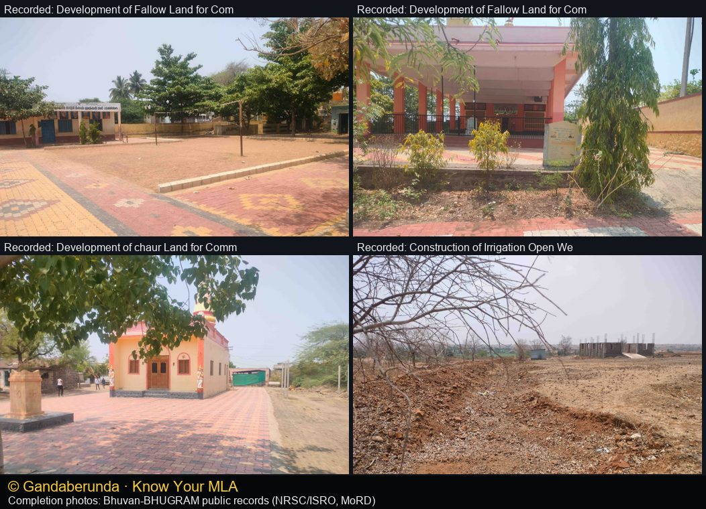
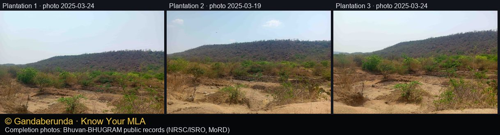
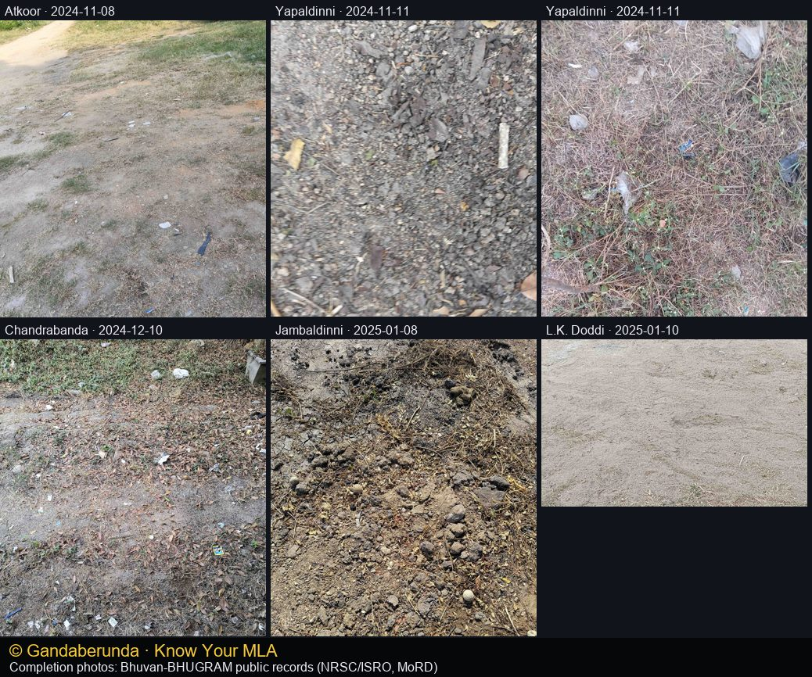
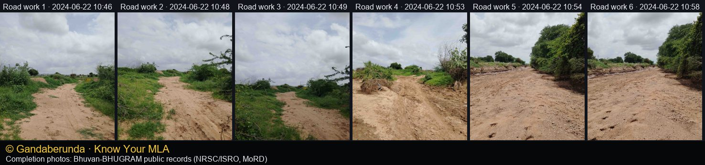
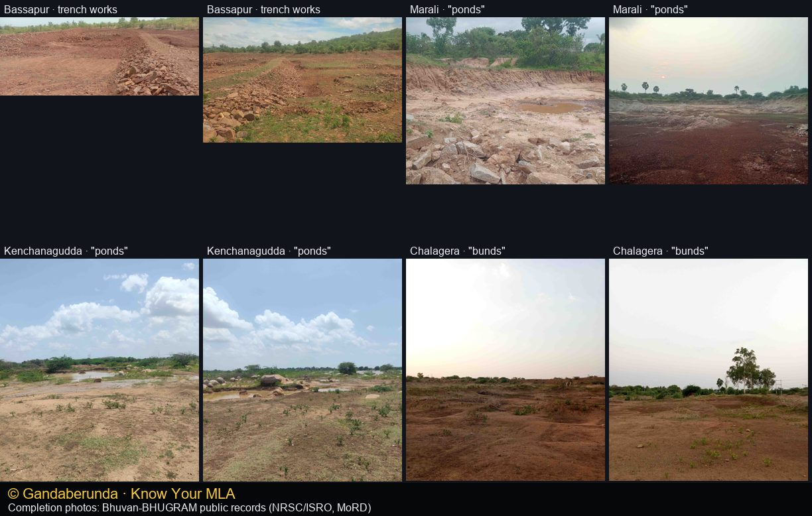
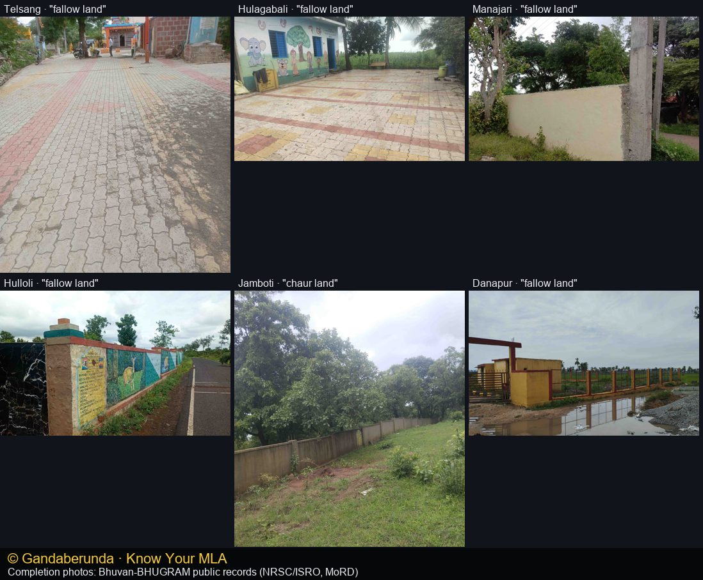

We ran every completed MGNREGA work in Karnataka for 2024-25, 8.24 lakh of them, through the same checks that found the tanks in Koppal and Kampli. Here is what the government's own records show: where the proof of work breaks down, new places where the record and the photograph do not match, how works are labelled, who approves the photos, and what the government has told the Assembly.
Sources: Bhuvan-BHUGRAM public dashboard and asset records (NRSC/ISRO for the Ministry of Rural Development), read 18 to 23 November 2026. Every finding was checked by eye before it went on this page. This is reporting on public records. It does not say any person did anything wrong, and the questions below are open to the officials concerned.
Every finished work needs a photo taken at the site, with its location. We found that check bypassed in three different ways across the state:
3,320 works were photographed at spots shared by five or more works from different panchayats. Of the ten biggest we checked by eye, seven show different fields, houses or plantations, all stamped with one location. In Hubli, 159 works share one point.
235 works carry a GPS point identical, to the metre, to other works on the same phone on different days. In Kundgol, one phone reported one point for 153 works over eight months.
In Mudigere (77 works from 15 panchayats), Beltangadi (over 100 works) and Badami (42 works), the "site photos" are snapshots of printed photographs, taken at one place. We do not show them because they picture villagers.
In most of these cases the work itself may well exist. The point is that the system's main proof of where, and whether, work was done proves nothing here, and every one of these photos was accepted.
Six community works carry ₹14.1 lakh in wages and ₹25.2 lakh in material, ₹39.4 lakh in all. This is what they are recorded as, and what their accepted completion photos show:
| Work code | Recorded as | Material (₹) | The photos show |
|---|---|---|---|
| 1504001003/LD/93393042892289935 | Development of fallow land | 6,76,880.77 | paver-block school compound |
| 1504001003/LD/93393042892289936 | Development of fallow land | 6,58,914.34 | paver-block school compound |
| 1504001003/LD/93393042892280559 | Development of fallow land | 5,02,747.36 | paver-block forecourt of a building |
| 1504001003/LD/93393042892273922 | Development of chaur land | 1,86,406.70 | paved courtyard of what appears to be a temple |
| 1504001003/RC/93393042892335371 | Bitumen top road | 4,98,643.43 | a paver-block path, not bitumen |
| 1504001003/IC/93393042892275599 | Irrigation open well | 0 (wages ₹4.61 lakh) | bare dug ground; no well visible |

Questions for the Taluk Panchayat, Athni: What was executed under each work code, and where? Why is paving recorded as land development, and as a bitumen road? Was any work done on the premises of a religious place? Where is the open well?
Three community plantation works (1501004026/WC/93393042892536299, …538527 and …538531) each carry a material bill of exactly ₹5,89,688.28 and wages of about ₹43 lakh: ₹1.48 crore and about 41,000 person-days in all. Their completion photos were taken within a few metres of each other, two of them one minute apart, and all three show the same hillside.

Questions for the Taluk Panchayat, Ilkal: Are these three separate plantation blocks? Where is each one? How many saplings were planted under each, and how many survive?
Forty-two works recorded as "block plantation of horticulture trees" (work year 2019-20), from 12 panchayats, carry about ₹20.7 lakh and 6,459 person-days. All their completion photos carry one location (16.2017 N, 77.3429 E). The photos we sampled show close-ups of bare ground and litter, with no trees.

Questions for the Taluk Panchayat, Raichur: Where is each of the 42 plantations? How many trees were planted, and how many survive? Why do the photos of 12 panchayats' plantations carry one location?
Sixteen road works carry a material bill of exactly ₹2,20,725.28 each, ₹35.3 lakh in material and about ₹39 lakh in all (work year 2022-23, all marked complete on 27 April 2024). Thirteen are recorded as "repair and maintenance of gravel road" (work codes 1510006010/RC/93393042892363198 to …363249). Their completion photos were taken at two points 25 metres apart, eleven of them within 14 minutes on 22 June 2024. The other three, recorded as new WBM roads (…362511 to …362513), were photographed at one point within 11 minutes.

Questions for the Taluk Panchayat, Molakalmuru: Are these sixteen separate roads? Where does each run? What material was bought sixteen times for ₹2,20,725.28?
The state auditor found that panchayats split one tank into many small works so each stays under the approval limit (Report No. 13 of 2025, para 5.6). We turned that pattern into a test anyone can repeat: in one panchayat, eight or more works of the same type whose completion photos were taken within about 250 metres of each other. With money records for three-quarters of the state's community works, it finds 90 sites, 1,183 works and ₹47.0 crore. It finds the Kampli and Jeerala tanks on its own.
We looked at the photos of eleven of the largest new sites. Two were genuine (a plant nursery raised in batches, and similar cases) and are left out. The rest:
| Panchayat (taluk, district) | Recorded as | Works | ₹ lakh | What the photos show |
|---|---|---|---|---|
| Bassapur (Hukeri, Belagavi) | water absorption trenches | 22 | 144.7 | one cleared, stone-lined site; all 22 photos within 15 metres |
| Marali (Gangavathi, Koppal) | community water harvesting ponds | 16 | 134.3 | one large dug pond, dry in June and full in August |
| Kenchanagudda (Siruguppa, Ballari) | renovation of community ponds | 21 | 117.1 | a scrubby tank bed with little sign of renovation; within 17 metres |
| Chalagera (Kushtagi, Koppal) | earthen graded bunds | 12 | 107.0 | open levelled ground; all 12 photographed in 43 minutes at dusk |
| Nalwar (Chitapur, Kalaburagi) | earthen contour bunds | 28 | 85.9 | the shore of a lake; contour bunds are built on fields |
| Danapur (Gangavathi, Koppal) | earthen peripheral bunds | 14 | 82.6 | eroded scrubland; no bund line visible |
| Kabbaragi (Kushtagi, Koppal) | renovation of community ponds | 9 | 80.0 | fresh trenches with workers; all 9 photographed in 18 minutes |
| Uppara Hosahalli (Siruguppa, Ballari) | renovation of community ponds | 11 | 70.9 | clear stepped digging under a rocky hill; within 16 metres |

The scheme requires most spending to go on farm and water works, and caps material at 40 per cent. We looked for works recorded as "development of fallow land" or "chaur land" whose cost is mostly material. There are 518 such works with ₹20.2 crore of material against ₹5.3 crore of wages. 193 of them (₹7.6 crore) are in Belagavi district, led by Telsang, Hulagabali and Shirahatti in Athni taluk and Jamboti in Khanapur.

Paving a school yard or building its wall can be a permitted work under the scheme's rural infrastructure list. The question is the label: recording construction as land development makes the scheme's farm-work and material limits look met when they may not be.
Each taluk has one account on the Bhuvan portal that accepts or rejects completion photos. From 80,331 approvals with a time stamp, across 101 taluk accounts, a typical account gives about 5 per cent of its approvals in bursts of ten or more a minute, and approves at most about 42 works on its busiest day. These accounts are far above that:
| Taluk account | Share given in bursts of 10+ a minute | Most in one minute | Most in one day |
|---|---|---|---|
| Kampli (Ballari) | 49.6% | 27 | 127 |
| Karatagi (Koppal) | 43.5% | 20 | 144 |
| Kalaburagi | 36.5% | 20 | 130 |
| Gangavathi (Koppal) | 32.7% | 22 | 65 |
| Bhalki (Bidar) | 26.2% | 31 | 102 |
| Siruguppa (Ballari) | 25.6% | 19 | 90 |
Bulk approval is common across the state and does not by itself show that any work is wrong. It shows that the step meant to catch a wrong photo is not looking. Three of the four fastest accounts are the taluks behind the two tank cases.
Assembly answers are scanned Kannada documents; we read them from the page images. Open each link to check.
Our scanner first flagged works recording thousands of person-days in a single day, in Kelavadi, Uppara Hosahalli and Gorabal among others. The photos showed real ponds, channels and plantations, and most of these records "start" on 1 April, the first day of the financial year: the system resets the start date of works carried over from the year before. We removed that pattern from the check rather than publish it. A finding that falls apart helps no one.